Este tutorial presupone que tienes algo de experiencia con Python y, al menos, lo tienes instalado. También se supone que tienes manejo de la terminal y que usas Linux. Estaría bien que tuvieses algunos conocimientos de git. Aquí puedes darle un repaso. Si usas Windows, no lo uses e instala WSL2. Aquí tienes una guía para Windows 10 y otra para Windows 11. Por último, deberías tener algunos conocimientos de HTML y CSS para aprovechar al máximo este tutorial.
Yo estoy usando Ubuntu 22.04.1 con Python3.10.
Creando este blog me encontré con que la documentación de Pelican es un poco difusa. Es por eso que quería plasmar todos los pasos que yo he seguido para crear mi página. En este post veremos qué es Pelican, qué es GitHub Pages y cómo usar ambos para crear nuestro sitio online totalmente gratis (costará tiempo, eso sí).
Un sitio estático no es más que un conjunto de archivos HTML, CSS e imágenes. Es una página que no cambia: lo que está en los archivos es lo que hay. Un ejemplo de sitio estático es en el que estás ahora mismo, ya que está creado con Pelican. De hecho, si navegas hasta mi repositorio, podrás ver absolutamente todos los archivos de los que se compone la página.
Los sitios dinámicos nos permiten, entre otras cosas, ejecutar scripts y funciones o modificar modelos de datos. Ejemplos de sitios dinámicos son los creados con Django. En estas páginas podemos introducir y borrar datos, así como ejecutar bloques de código de nuestro backend.
Si quieres hacer una página que almacene datos que introduzcan los usuarios o ejecute código, como por ejemplo LinkedIn (spam de mi perfil de LinkedIn), lo que buscas es un sitio dinámico. Si quieres simplemente hacer un sitio que muestre contenido, sin duda un sitio estático es para tí.
Los sitios dinámicos son mucho más complejos y difíciles de construir. Por lo tanto, si lo que buscas es publicar artículos y poco más (como es mi caso), un sitio estático te ahorra muchos dolores de cabeza.
Pelican es un generador de sitios estáticos que no necesita hacer uso de bases de datos ni de servidores para su despliegue. Traduciendo de su página oficial:
Pelican tiene todo lo necesario para crear tu sitio estático. Los despliegues son rápidos y está bien diseñado.
Pelican tiene muchísimas características y utilidades. Las más interesantes son:
Puedes escribir los posts en reStructuredText o en Markdown:
Esta es para mí una de las características más importantes ya que gracias a esto podemos escribir todo nuestro contenido sin necesidad de usar HTML (aunque más tarde lo usaremos para definir las plantillas de nuestro sitio).
Temas:
En Pelican podemos usar temas predefinidos o hechos por la comunidad con pocos clicks y tendríamos un sitio bonito en poco tiempo. Aún así lo más interesante es que nosotros podemos crear nuestros propios temas (básicamente es definir nuestro css) para darle un aspecto mucho más personal a nuestra página. En estos temas también tenemos acceso al uso de plantillas Jinja2, de las cuales hablaremos más adelante y seguro que os gustan.
Resaltado de código:
Gracias a Pygments podemos, de manera fácil, crear un estilo para el código que escribamos en nuestros posts. Perfecto para blogs o sitios que vayan a estar enfocados en programación, data sience, etc.
Para el listado completo de características ver el apartado Features de su sitio oficial.
A continuación, empezaremos a construir nuestro sitio. Para ello seguiremos la guía quickstart de Pelican.
Lo primero que deberemos hacer es crear un entorno virtual usando Python (en mi caso estoy usando Python 3.10), activarla y ejecutar el siguiente comando en nuestra terminal:
python -m pip install "pelican[markdown]"
Si no sabes cómo crear un entorno virtual, aquí tienes un tutorial.
Deberemos crear una carpeta para nuestro proyecto. En mi caso la voy a llamar blog así que ejecuto el siguiente comando en la terminal para crear y acceder a mi carpeta (asegúrate de que estás en el directorio en el que quieres crear el proyecto):
mkdir blog
cd blog
Una vez dentro de nuestra carpeta, ejecutamos el comando que generará toda la estructura de nuestro sitio:
pelican-quickstart
Después de ejecutarlo nos aparecerán distintas opciones que tendremos que elegir. Aquí os dejo lo que tenéis que poner (si no hay respuesta simplemente tenéis que pulsar enter):
Welcome to pelican-quickstart v4.8.0.
This script will help you create a new Pelican-based website.
Please answer the following questions so this script can generate the files
needed by Pelican.
> Where do you want to create your new web site? [.]
> What will be the title of this web site? Emilio Barragán
> Who will be the author of this web site? Emilio Barragán
> What will be the default language of this web site? [en] es
> Do you want to specify a URL prefix? e.g., https://example.com (Y/n)
> What is your URL prefix? (see above example; no trailing slash) https
> Do you want to enable article pagination? (Y/n)
> How many articles per page do you want? [10] 3
> What is your time zone? [Europe/Rome] Europe/Madrid
> Do you want to generate a tasks.py/Makefile to automate generation and publishing? (Y/n)
> Do you want to upload your website using FTP? (y/N)
> Do you want to upload your website using SSH? (y/N)
> Do you want to upload your website using Dropbox? (y/N)
> Do you want to upload your website using S3? (y/N)
> Do you want to upload your website using Rackspace Cloud Files? (y/N)
> Do you want to upload your website using GitHub Pages? (y/N) y
> Is this your personal page (username.github.io)? (y/N) y
Done. Your new project is available at /home/emibarrod/blog
Si hemos hecho todo bien hasta ahora, ya tendríamos una carpeta llamada blog con el siguiente contenido:
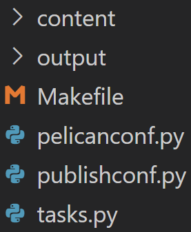
El siguiente paso es escribir nuestro primer post. Para ello no tenemos más que crear un archivo Markdown en la carpeta content dentro de nuestro proyecto. El contenido del archivo tiene que seguir la siguiente estructura:
Title: Mi primer post
Date: 2022-02-26
Tags: post
Slug: mi-primer-post
Summary: Resumen de mi primer post.
Contenido de mi post.
Vamos por partes:
Title: Es el título que tendrá nuestro post.Date: La fecha en la que escribimos o publicamos el post.Tags: Son los distintas etiquetas o temas que trata nuestro post.Slug: Cómo aparecerá el nombre de nuestro post en la URL.Summary: Un breve resumen del contenido del artículo.Estos elementos los podremos usar luego en las plantillas de Jinja2 para obtener información y contenido de nuestro post, y poder mostrarlo en la página. Puedes quitar o añadir más elementos. Yo uso estos. Para más información leer el apartado "Writing content" de la documentación de Pelican.
Una vez hayamos terminado de rellenar nuestro post, lo guardamos y ejecutamos lo siguiente en la terminal:
pelican content
Lo cual nos creará una carpeta llamada output en la raíz de nuestro proyecto. En esta carpeta estarán todos los archivos estáticos que generará Pelican y de los que está compuesta nuestra página: HTML, CSS, imágenes...
Para añadir imágenes a nuestros posts:
images dentro de la carpeta content.pelicanconf.py tenemos que añadir lo siguiente:STATIC_PATHS = [
'images'
]
images metemos todas las imágenes que vayamos a usar en nuestros artículos.Title: Mi primer post
Date: 2022-02-26
Tags: post
Slug: mi-primer-post
Summary: Resumen de mi primer post.
Contenido de mi post. A continuación introduciré una imagen:
[imagen](images/perrito.jpg)
Cómo aparece la imagen en la página depende del tema que estemos usando.
Para desplegar nuestro sitio, una vez generados nuestros archivos estáticos, simplemente debemos escribir el siguiente comando:
pelican --autoreload --listen
El argumento --listen desplegará nuestro sitio en local y el argumento --autoreload hará que, cuando guardemos un cambio en nuestro blog, actualice nuestro despliegue actual automáticamente. Una vez hecho esto, podemos escribir en nuestro buscador http://127.0.0.1:8000 y nos debería aparecer algo como esto:
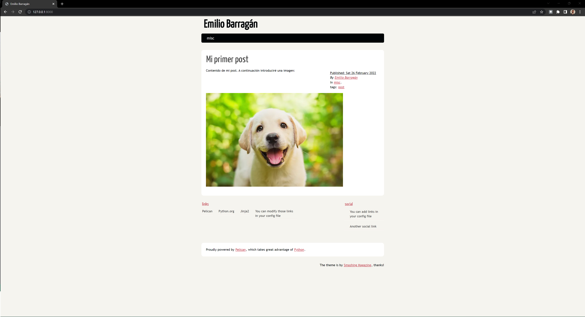
Si eres capaz de ver lo mismo que yo... ¡enhorabuena! Ya tienes un sitio estático desplegado en local.
El aspecto que tiene nuestro sitio por defecto es un poco... feo. Podemos descargar un tema más bonito desde el repositorio de pelican pelican-themes. Como es un poco difícil ver uno a uno los temas, hay una página que los lista y muestra una preview: pelicanthemes.com
El proceso es sencillo:
Elegimos el tema que queremos, ya sea por el repositorio de pelican-themes o por la página que lista los temas. En mi caso voy a elegir uno llamado aboutwilson.
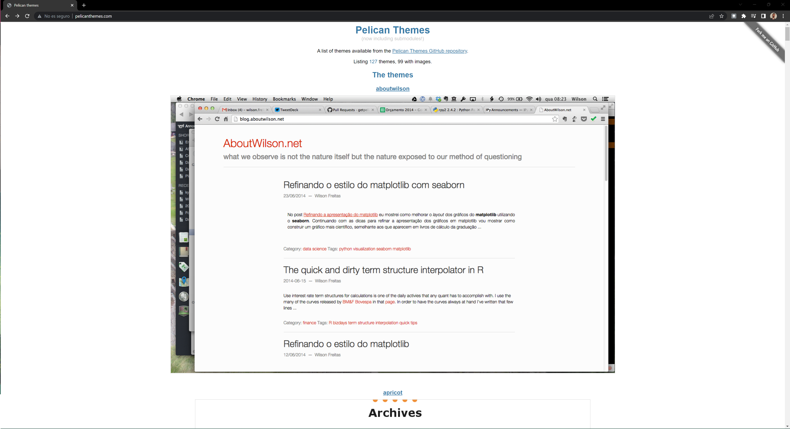
Entramos a la carpeta del tema que hemos elegido. En mi caso, como estoy usando la página del listado, pulso en el nombre del tema y me lleva al repositorio.
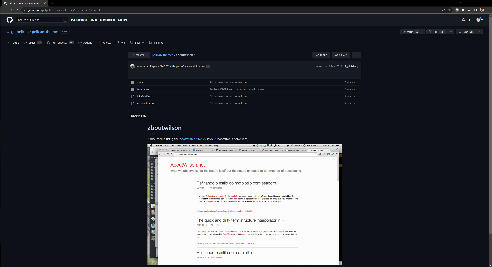
Lo descargamos copiando la URL de la carpeta y pegándola en Download Directory. Si quieres puedes clonar todo el repositorio de pelican-themes y copiar la carpeta que te interese en vez de usar este método.
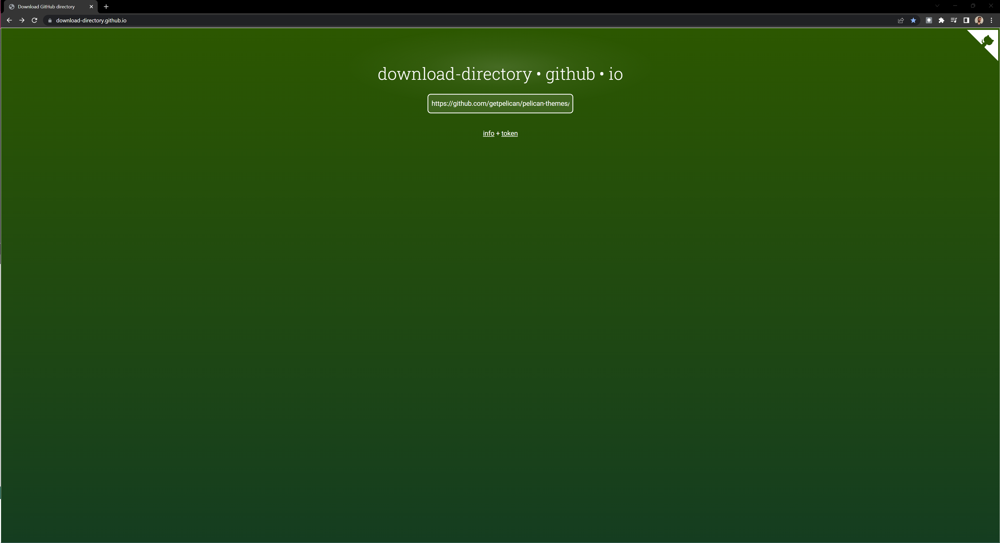
Se te descargará un zip. Tienes que guardarlo en la raíz de tu proyecto y descomprimirlo a una carpeta con el nombre del tema. En mi caso, la carpeta donde descomprimiré todo se llama aboutwilson. Luego puedes borrar el zip. La estructura de tu proyecto ahora debería ser la siguiente:
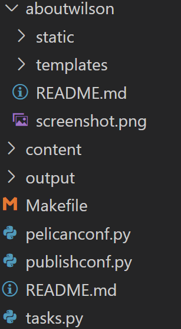
Por último, tenemos que ir a nuestro archivo pelicanconf.py y añadir las siguientes líneas al final:
THEME = './aboutwilson'
THEME_STATIC_DIR = 'static'
THEME_STATIC_PATHS = ['static']
Ahora solo nos queda ir a la terminal y escribir el comando pelican --listen --autoreload (si ya lo estabas ejecutando no hace falta, cuando guardes el archivo de configuración se recargará tu página). De esta manera ya tendremos nuestro tema listo.
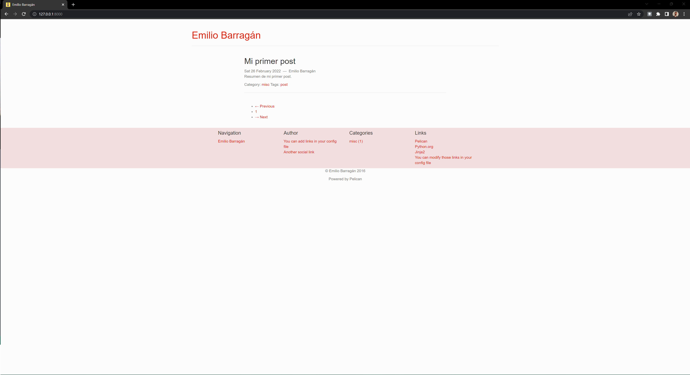
Usar un tema predefinido está bien: es fácil y rápido. Pero que tu web tenga el mismo aspecto que otras no te hace destacar. Es por ello que vamos a crear nuestro propio tema.
Para crear un tema vamos a necesitar saber CSS y HTML ya que lo que haremos será desarrollo frontend puro y duro. Si no sabéis CSS ni HTML no pasa nada, hay miles de tutoriales online y, mientras aprendéis, podéis usar los temas predefinidos sin problema.
ATENCIÓN: A partir de aquí, mientras estemos creando el tema, debéis sustituir
emibarrodpor el nombre de vuestro tema, Si no, no os funcionará.
Lo primero que debemos hacer es crear, en la raíz de nuestro proyecto, una carpeta con el nombre que le queramos dar a nuestro tema. Yo lo llamaré emibarrod. Aquí guardaremos todo el contenido del tema. Dentro de esta carpeta crearemos dos más: static y templates. Por último, dentro de la carpeta static, crearemos una subcarpeta llamada css. El uso de las carpetas es el siguiente:
static : Almacenará los ficheros estáticos. En este caso solo será la carpeta de los CSS.
templates : Almacenará las plantillas HTML que usaremos para generar nuestro sitio.
css : Almacenará los archivos CSS de nuestro sitio.
Una vez terminada la estructura procedemos a crear los ficheros necesarios:
emibarrod/static/css/main.css : Donde estará todo el estilo de nuestra página.
emibarrod/templates/article.html : Plantilla para todos los artículos que escribamos.
emibarrod/templates/base.html : HTML base que usarán casi todas las demás plantillas.
emibarrod/templates/index.html : Página principal que listará todos nuestros posts.
emibarrod/templates/pagination.html : Plantilla que usaremos para la paginación de los artículos.
Nuestra estructura debería quedar tal que así:
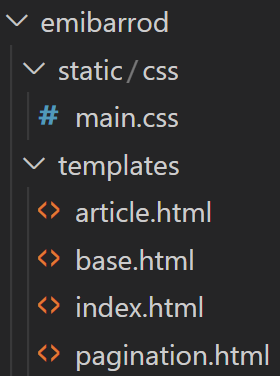
Antes de nada, para que nuestro tema personalizado funcione, tenemos que cambiar la siguiente línea en nuestro archivo de configuración pelicanconf.py:
THEME = './emibarrod'
Recuerda cambiar
emibarrodpor el nombre de tu tema.
Para que aprendas cómo crear una plantilla vamos a rellenar las que hemos creado anteriormente: base.html, index.html, article.html y pagination.html.
En las plantillas, Pelican usa Jinja2 como templating engine. Para los familiarizados con Django, es muy parecido al lenguaje de plantillas de Django. Esto nos permite enriquecer mucho más nuestros HTML. En esta guía no profundizaremos mucho en Jinja2, pero puedes leerte el apartado para crear templates de su documentación.
base.html : La página base es donde definiremos el esqueleto de nuestra página. El código es el siguiente:<!DOCTYPE html>
<html lang="{{ DEFAULT_LANG }}">
<head>
<meta charset="utf-8">
<meta name="viewport" content="width=device-width, initial-scale=1">
<title>{% block title %}{{SITENAME}}{% endblock %}</title>
<meta name="description" content="{% block description %}Data science and programming.{% endblock %}">
<link rel='stylesheet' href='{{ SITEURL }}/{{ THEME_STATIC_DIR }}/css/{{ CSS_FILE }}'/>
{% block head %}
{% endblock head %}
</head>
<body>
<h1><a class='web-title-text' href='{{ SITEURL }}'>Emilio Barragán</a></h1>
{% block body %}
{% endblock body%}
</body>
</html>
Como podemos ver, definimos un head y un body. Hay que tener en cuenta que todo lo que escribamos en esta plantilla se verá en cualquier parte de nuestra página. Dentro del head usamos Jinja2 para insertar un par de bloques:
{% block head %}
{% endblock head %}
{% block body %}
{% endblock body%}
En estos bloques insertaremos código en las distintas plantillas que hereden de la base. Dicho código aparecerá exactamente donde lo hemos definido en esta plantilla.
index.html : Esta página indexará los artículos que tengamos escritos. El código sería el siguiente:{% extends 'base.html' %}
{% block body %}
<div>
<div>
{% for article in articles_page.object_list %}
<h2><a class='article-preview-title' href="{{ SITEURL }}/{{article.url}}"> {{ article.title}} </a></h2>
<a class='content-text'> {{article.summary}}
<hr />
{% endfor %}
</div>
{% if articles_page.has_other_pages() %}
{% include 'pagination.html' %}
{% endif %}
</div>
{% endblock body %}
La primera línea nos permite usar base.html como base para esta página. Podemos apreciar que abrimos el bloque body. Todo lo que escribamos dentro de este bloque aparecerá dentro del bloque body de nuestra página base. Nosotros vamos a meter un bucle para recorrer todos nuestros artículos y mostrar su título con un enlace, y el resumen del mismo.
Si tenemos pelican ejecutando (recuerda el comando pelican --listen --autoreload) y accedemos a http://127.0.0.1:8000/index.html nos encontraremos esto:
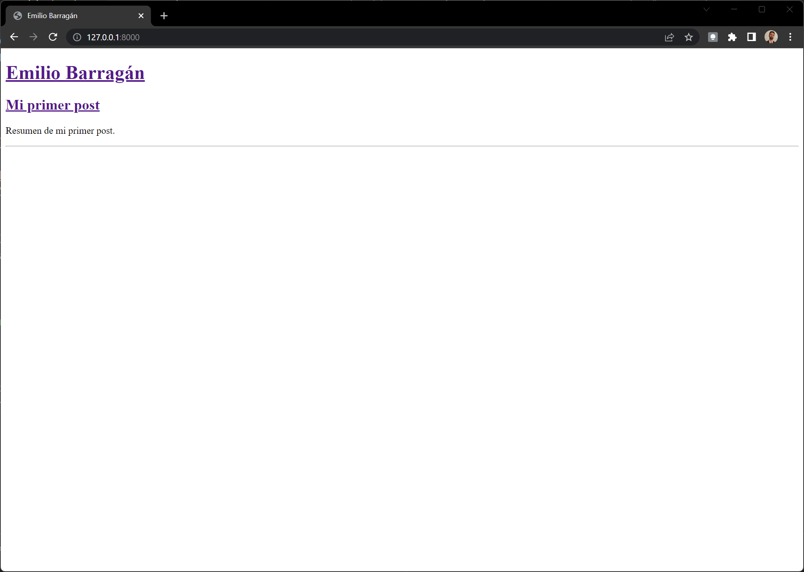
article.html : Esta será la plantilla que renderize nuestro artículo. El código es:{% extends 'base.html' %}
{% block head %}
<title>{{SITENAME}} - {{ article.title }}</title>
{% endblock head%}
{% block body %}
<div>
<h1>{{ article.title }}</h1>
<a>{{ article.content }}</a>
</div>
{% endblock body %}
Aquí hacemos lo mismo que en index.html. Incorporamos la plantilla base y luego añadimos contenido a los bloques head y body. En concreto añadiremos el título del post y su contenido. Tras haber escrito este código, nuestro artículo aparecerá de la siguiente forma:
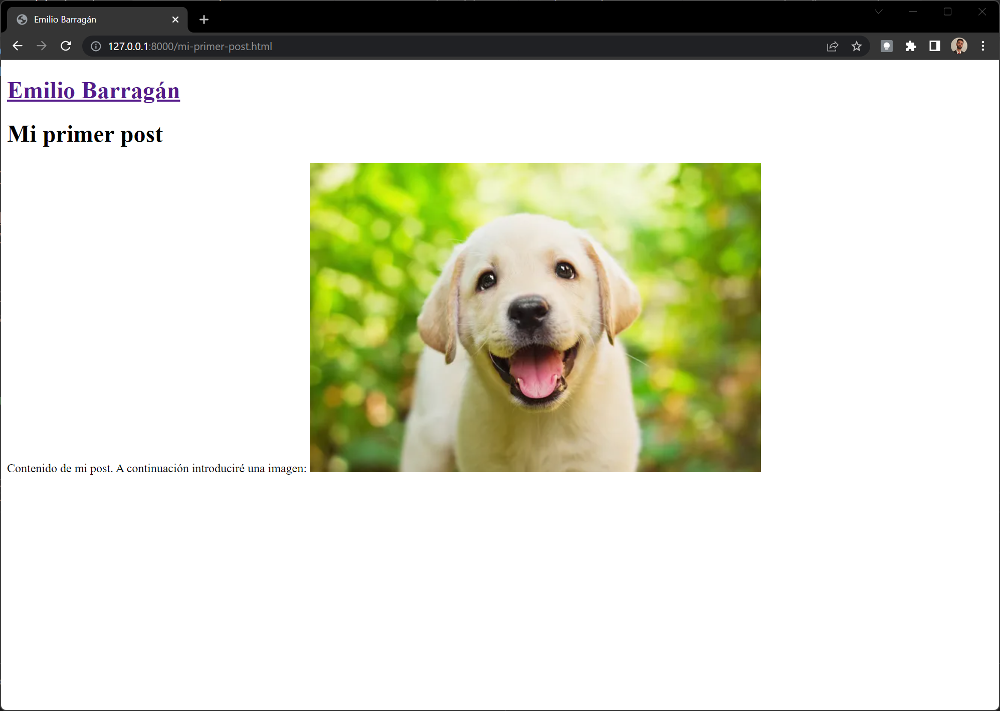
pagination.html : Es lo que usaremos para poder pasar de página en caso que tengamos más artículos que nuestro máximo por página. El código es el siguiente:{% if DEFAULT_PAGINATION %}
{% set first_page = articles_paginator.page(1) %}
{% set last_page = articles_paginator.page(articles_paginator.num_pages) %}
<p>
{% if articles_page.has_previous() %}
<a href="{{ SITEURL }}/{{ first_page.url }}">⇇</a>
<a href="{{ SITEURL }}/{{ articles_previous_page.url }}">«</a>
{% endif %}
Página {{ articles_page.number }} / {{ articles_paginator.num_pages }}
{% if articles_page.has_next() %}
<a href="{{ SITEURL }}/{{ articles_next_page.url }}">»</a>
<a href="{{ SITEURL }}/{{ last_page.url }}">⇉</a>
{% endif %}
</p>
{% endif %}
No vamos a entrar mucho en detalle sobre esta plantilla pero, en esencia, comprueba si tenemos más páginas antes o después de la actual. En caso de tenerlas, creamos unas flechitas (los códigos esos raros) cuyos enlaces son la página siguiente o anterior.
Para añadir CSS a nuestra página, es tan fácil como escibir el código en el archivo emibarrod/static/css/main.css. No vamos a explicar CSS, pero si escribimos en nuestro archivo el siguiente código, lo veremos reflejado en la página. Aviso, va a ser feo, pero es para que veáis que se puede:
body {
background-color: grey;
color: beige;
}
.web-title-text {
text-decoration: none;
color: aliceblue;
background-color: brown;
}
.article-preview-title {
text-decoration: none;
color:black;
background-color:blanchedalmond;
}
Esto nos daría el siguiente contenido:
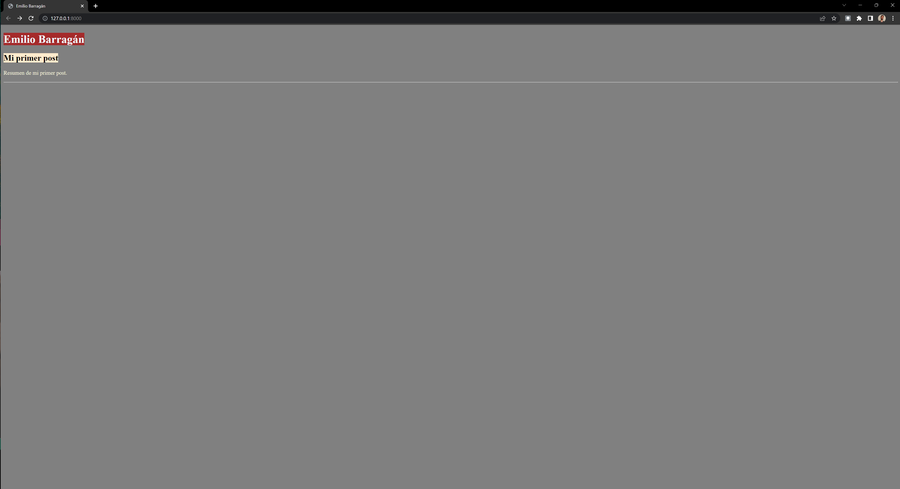
Como podéis comprobar, es feo, pero ahora sabéis que se puede hacer fácil. Solo tenéis que aprender un poco de HTML y CSS.
Cuando instalamos Pelican, se nos instala también algo llamado Pygments. Esto nos permitirá crear estilos para nuestro código (somos data scientist, tenemos que escribir código bonito).
Para crear un estilo por defecto, nos vamos a la terminal, activamos el entorno virtual de nuestro proyecto (si estamos usando uno) y accedemos a la carpeta raíz de nuestro blog (en el caso de este tutorial, sería la carpeta blog). Tras esto, escribimos el siguiente comando:
pygmentize -S default -f html -a .highlight > emibarrod/static/css/code.css
Acuérdate de cambiar emibarrod por el nombre de tu tema.
Después de haber hecho este paso, solo nos queda una cosita más. Abrimos el archivo emibarrod/templates/base.html (que no se os olvide cambiar el nombre de mi tema por el vuestro) y, debajo de la línea 8, insertamos lo siguiente:
<link rel='stylesheet' href='{{ SITEURL }}/{{ THEME_STATIC_DIR }}/css/code.css'/>
Para comprobar que funciona vamos a añadir código a nuestro primer post. Lo abrimos y al final añadimos algo de código. El post quedaría tal que así:
Title: Mi primer post
Date: 2022-02-26
Tags: post
Slug: mi-primer-post
Summary: Resumen de mi primer post.
Contenido de mi post. A continuación introduciré una imagen:

```python
def main():
print("Hello world")
```
Y ahora, cuando guardemos el archivo y vayamos a nuestra página (acuérdate que tienes que tener el comando pelican --listen --autoreload funcionando para poder ver tu página), veremos esto:
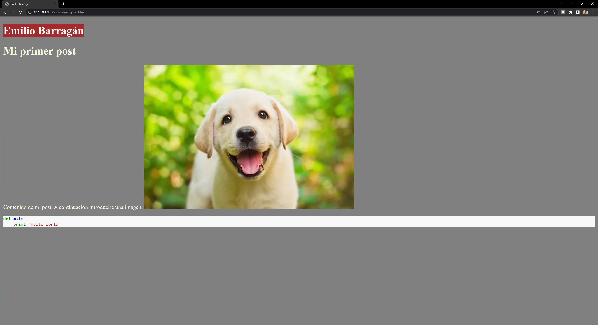
Hasta aquí hemos visto:
Ahora nos queda publicar la página para que se pueda ver online. Para ello usaremos GitHub Pages.
Según la página oficial de GitHub:
GitHub Pages es un servicio de alojamiento de sitio estático que toma archivos HTML, CSS y JavaScript directamente desde un repositorio en GitHub, opcionalmente ejecuta los archivos a través de un proceso de complilación y publica un sitio web.
Tal y como dice, GitHub Pages sirve para alojar sitios estáticos, por lo tanto es la pareja perfecta para Pelican.
Puedes crear páginas para tí, para tu organización o para tu proyecto.
Rápido y sencillo de configurar. GitHub Pages se encarga de casi todo.
Podemos usar el dominio por defecto (usuario.github.io) o podemos comprar un dominio personalizado, como el de esta página, y usarlo.
Se puede configurar nuestro sitio con HTTPS, algo imprescindible hoy en día.
Y lo más importante es que es GRATIS. Aún así, como todo lo gratis, tenemos límites de uso.
La configuración de GitHub Pages conlleva una serie de pasos:
Si no tienes cuenta de GitHub, crea una.
Una vez tengamos creado nuestro perfil, nos vamos a la pestaña repositorios (repositories en inglés), y creamos un repositorio nuevo.
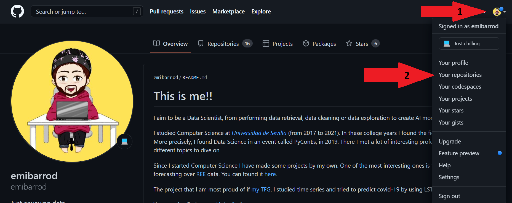 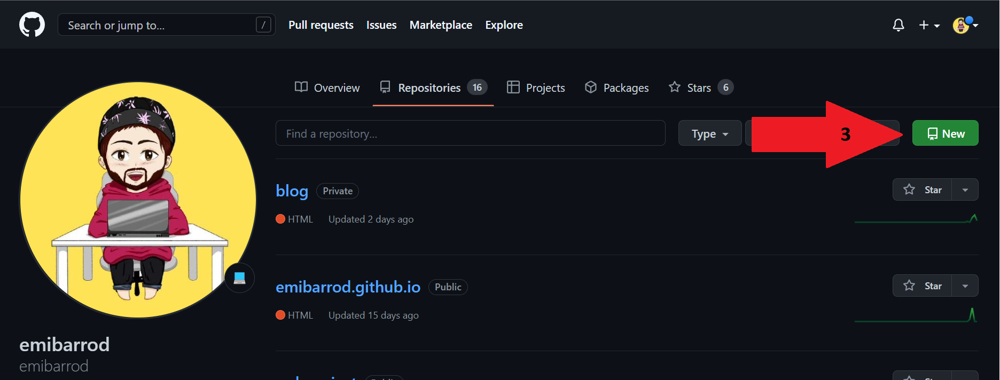
Debemos ponerle como nombre usuario.github.io, donde usuario es tu nombre de usuario. En mi caso emibarrod. La configuración debe ser la misma que en la siguiente foto:
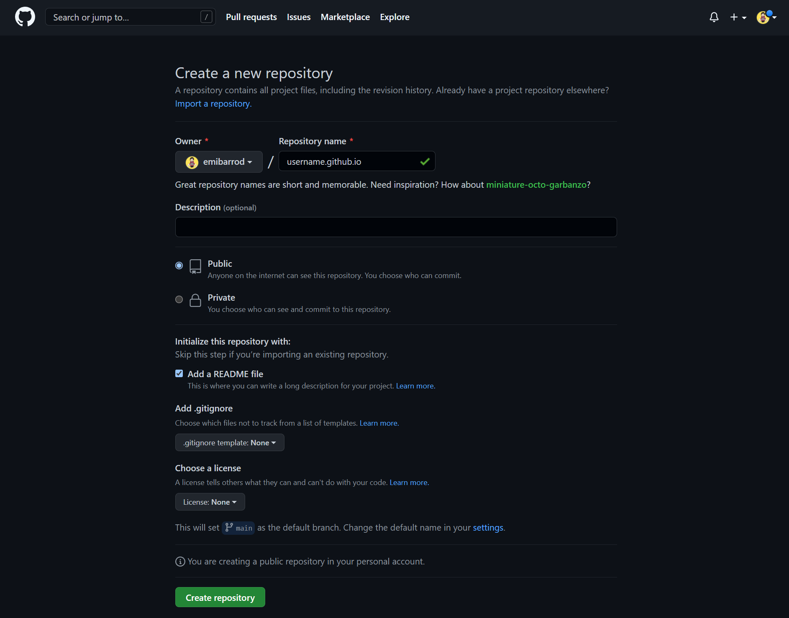
Una vez configurado, le damos a crear repositorio.
Clonamos el repositorio que acabamos de crear en la misma carpeta que nuestro proyecto. Si nuestro proyecto blog está en la carpeta proyectos, deberemos clonar este repo en dicha carpeta. No entraremos en detalle de cómo clonar un repositorio porque hay varias formas. Os dejo aquí una guía.
Cuando tengamos el repositorio clonado en la misma carpeta, solo nos quedaría configurar Pelican.
A parte de la configuración que tenemos en el archivo pelicanconf.py, nos aparece una que se llama publishconf.py. Este archivo de configuración será el que utilicemos para publicar nuestro sitio al repositorio github.
El archivo publishconf.py debería tener el siguiente aspecto:
# This file is only used if you use `make publish` or
# explicitly specify it as your config file.
import os
import sys
sys.path.append(os.curdir)
from pelicanconf import *
# If your site is available via HTTPS, make sure SITEURL begins with https://
SITEURL = 'https://usuario.github.io'
RELATIVE_URLS = False
OUTPUT_PATH = "ruta/al/repo/usuario.github.io"
# FEED_ALL_ATOM = 'feeds/all.atom.xml'
# CATEGORY_FEED_ATOM = 'feeds/{slug}.atom.xml'
DELETE_OUTPUT_DIRECTORY = False
# Following items are often useful when publishing
#DISQUS_SITENAME = ""
#GOOGLE_ANALYTICS = ""
SITEURL tiene que tener el nombre del repositorio que has creado, en mi caso emibarrod.github.io.OUTPUT_PATH es el path hasta el repositorio clonado anteriormente.Tras haber creado esta configuración, tendremos que generar nuestro sitio en el nuevo repositorio. Para ello ejecutamos el siguiente comando dentro de la carpeta blog:
pelican -s publishconf.py --theme nombre-del-tema-que-usas
Una vez hecho esto, podremos comprobar que en la carpeta usuario.github.io tendremos archivos generados:
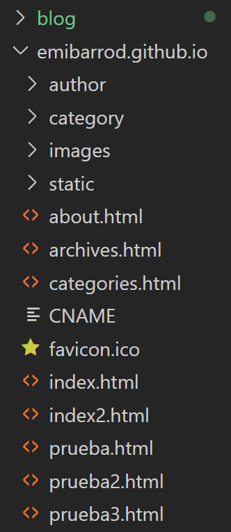
No pasa nada si ves archivos que tú no tienes, es normal.
Ahora solo nos queda añadir los cambios a nuestro repositorio y acceder a https://usuario.github.io (acuérdate que usuario es tu usuario de GitHub) y deberías ver tu página. Si no ves aún la página es porque GitHub Pages aún no habrá terminado de construirla, ten paciencia.
En próximos posts veremos cómo añadir un favicon a nuestra página, cómo tener un dominio personalizado y muchas cosas más.
¡Espero que te haya servido este tutorial! Me harías un gran favor si lo compartes con tus amigos o en redes sociales. ¡Gracias por leerme!